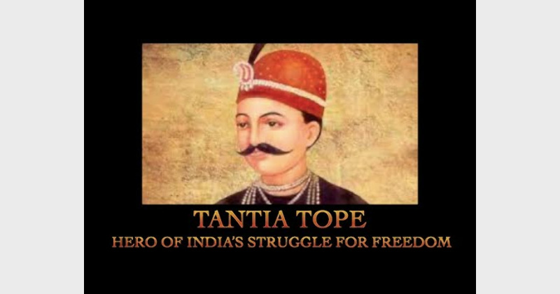

Tantia Tope

Born: 1814, Yeola
Died: 18 April 1859, Shivpuri
Full name: Ramachandra Pandurang Tope
Tantia Tope was one of the famous revolutionaries of the Rebellion of 1857. Born in 1814, he
led his soldiers to fight against the dominance of British rule. He made General Windham leave
Kanpur and helped Rani Lakhsmi Bai reinstating Gwalior.
Indian Mutiny, also called Sepoy Mutiny or First War of Independence, widespread but unsuccessful
rebellion against British rule in India in 1857-59. Begun in Meerut by Indian troops (sepoys) in the
service of the British East India Company, it spread to Delhi, Agra, Kanpur, and Lucknow. In India it
is often called the First War of Independence and other similar names.
To regard the rebellion merely as a sepoy mutiny is to underestimate the root causes leading to it.
British paramountcy—i.e., the belief in British dominance in Indian political, economic, and cultural
life—had been introduced in India about 1820. The British increasingly used a variety of tactics
to usurp control of the Hindu princely states that were under what were called subsidiary alliances
with the British. Everywhere the old Indian aristocracy was being replaced by British officials.
One notable British technique was called the doctrine of lapse, first perpetrated by
Lord Dalhousie in the late 1840s. It involved the British prohibiting a Hindu ruler without a natural
heir from adopting a successor and, after the ruler died or abdicated, annexing his land. To those
problems may be added the growing discontent of the Brahmans, many of whom had been
dispossessed of their revenues or had lost lucrative positions.
Another serious concern was the increasing pace of Westernization, by which Hindu society was being
affected by the introduction of Western ideas. Missionaries were challenging the religious beliefs of
the Hindus. The humanitarian movement led to reforms that went deeper than the political superstructure.
During his tenure as governor-general of India (1848-56), Lord Dalhousie made efforts toward emancipating
women and had introduced a bill to remove all legal obstacles to the remarriage of Hindu widows.
Converts to Christianity were to share with their Hindu relatives in the property of the family estate.
There was a widespread belief that the British aimed at breaking down the caste system.
The introduction of Western methods of education was a direct challenge to orthodoxy, both Hindu and Muslim.